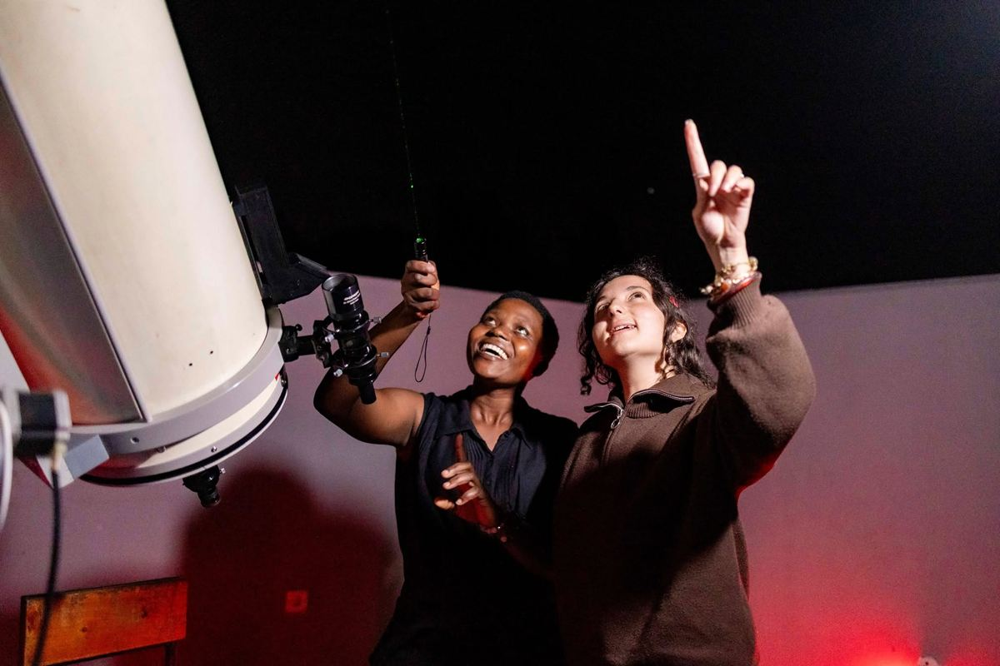
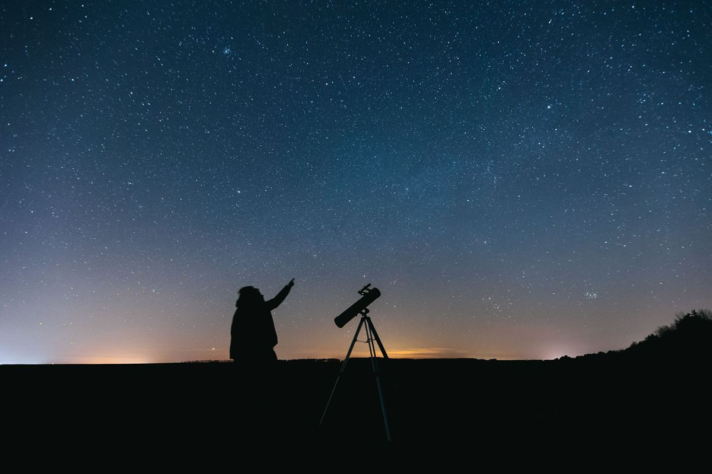

Astrotourism
The stars are the world's oldest attraction.
Around 8 in 10 people live under light-polluted skies and can no longer see the Milky Way. We help communities turn dark skies into tourism that creates jobs and celebrates local culture.

Turning our knowledge of the universe into skills, inspiration and opportunities for people on Earth.
254
projects funded
114
countries
2M+
people reached
€1.5M+
granted to projects
Three flagship programmes that take approaches proven to work and help communities around the world adopt them.
The stars are the world's oldest attraction.
Around 8 in 10 people live under light-polluted skies and can no longer see the Milky Way. We help communities turn dark skies into tourism that creates jobs and celebrates local culture.

Using astronomy as a gateway to in-demand skills.
Through hackathons, workshops and training, we teach programming, data science and machine learning that open pathways to careers in many fields.

The universe is vast. Sometimes, that helps.
Together with mental health professionals and researchers, we're exploring how the night sky, free and open to everyone, can support wellbeing alongside traditional care.